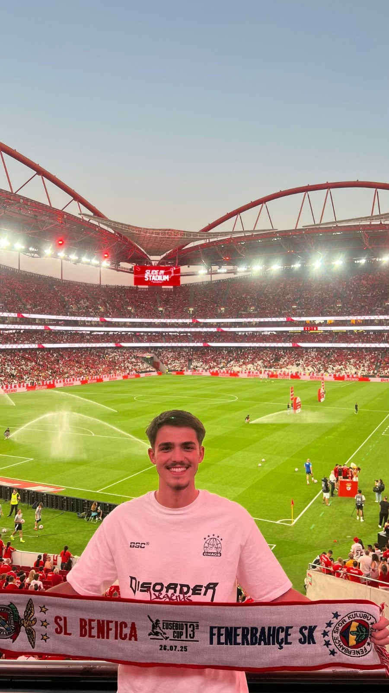
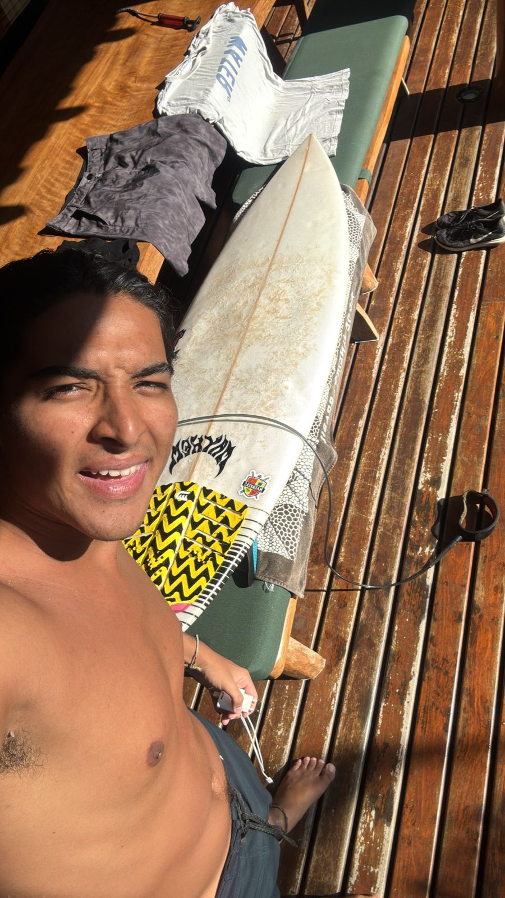
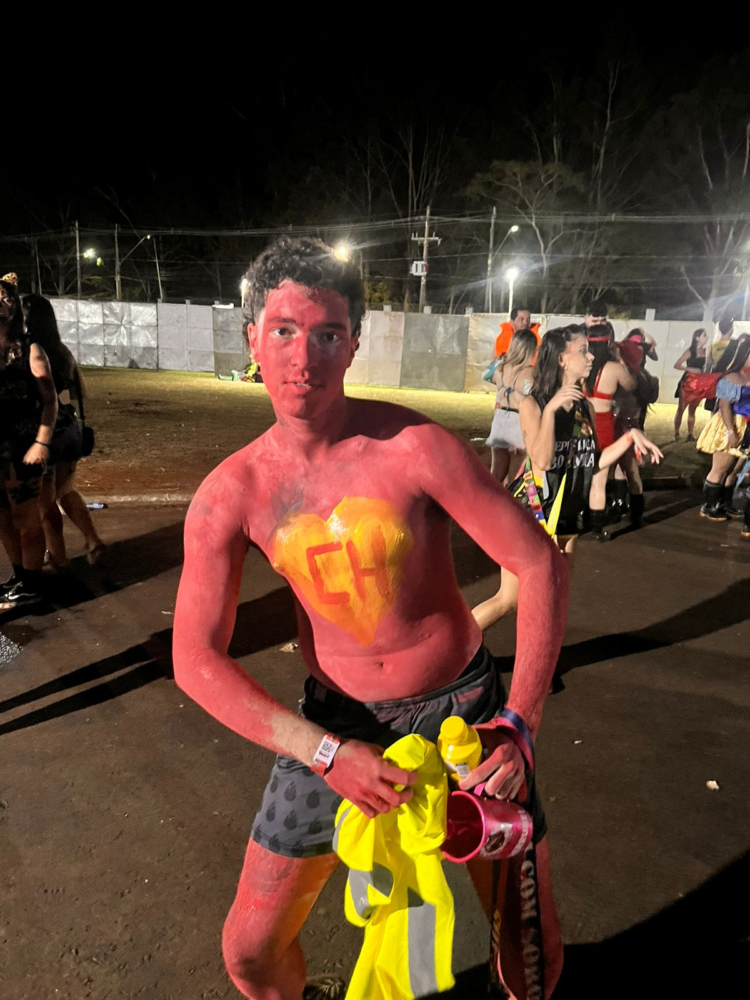
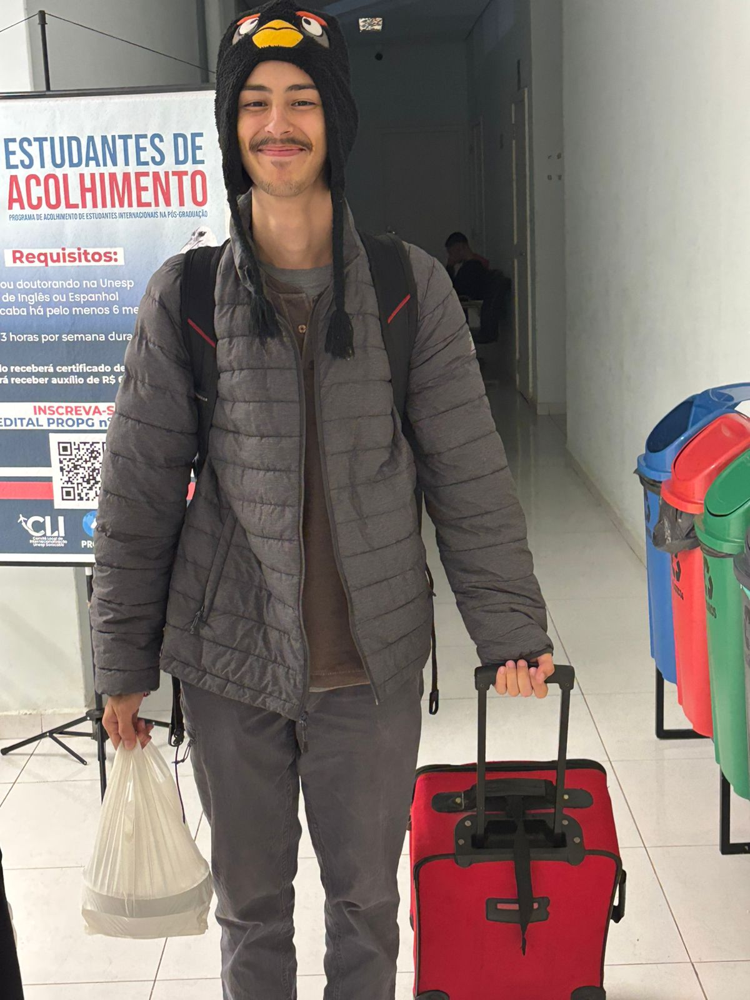
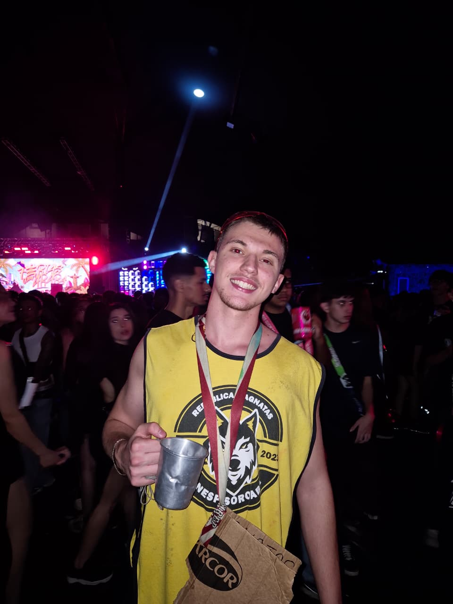
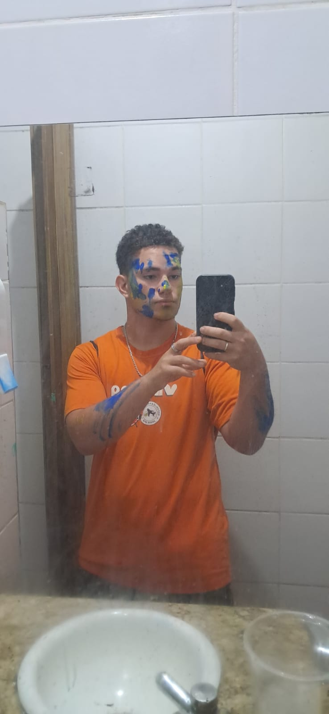
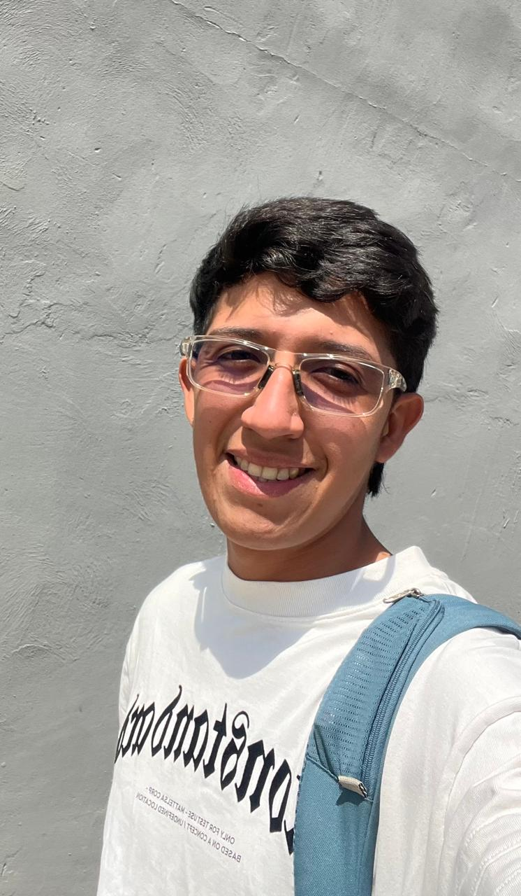

Quem faz a Magnatas acontecer
Conheça nossa família e os melhores momentos da nossa vivência universitária.
Moradores Atuais

"TD"
20 anos - Amparo, SP
Engenharia de Controle e Automacao - Turma 022
"Promessa"
22 anos - Sao Paulo, SP
Engenharia de Controle e Automacao - Turma 021
"Ze Neto"
23 anos - Barretos, SP
Engenharia de Controle e Automacao - Turma 020

"Bruninha"
24 anos - Sao Paulo, SP
Engenharia de Controle e Automacao - Turma 020
"Love"
24 anos - Piracicaba,SP
Engenharia Ambiental - Turma 019

"Chapolin"
23 anos - Goiania,SP
Engenharia Eletrica - Turma 024

"Formal"
19 anos - Indaiatuba,SP
Engenharia de Controle e Automacao - Turma 024

"Taz"
18 anos - Campinass,SP
Engenharia de Controle e Automacao - Turma 024

"Dedao"
19 anos - Jundiai,SP
Engenharia Ambiental - Turma 024

"Colombia"
20 anos - Pereira,Colombia
Engenharia de Controle e Automacao - Turma 024